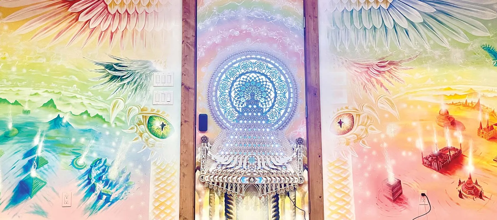
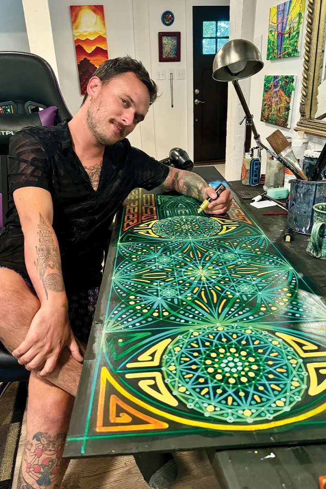

Gavinger — visionary art and funktional furniture by Gavin Gerundo
02·The Timeless Collection
Clocks that keep becoming.
Hand-painted wall clocks, every dial a mandala in motion. The pendulums are real; so is the paint.
03·Funktional Furniture
Furniture with an inner life.
Grandfather clocks, curio cabinets, jewelry boxes — stripped to raw wood and reborn freehand. No tape. No stencils.
04·Originals & Prints
The finite, revealing the infinite.
Original canvases, the twelve-sign Gonzodiac, the Deeper Depths series, tapestries and small treasures.

05·Murals
Walls are just larger canvases.
Rooms, storefronts, sanctuaries — painted into portals. Commissions open for spaces that want to wake up.
Commission a mural
06·The Artist
Gavin Gerundo paints the space between.
Cincinnati-born, trained in Industrial Design, forged in the music scene — first painting live beside the stage, then painting leather as Gonzo Gear, then giving whole rooms and hundred-year-old furniture a second, stranger life.
His work has hung at Alex Grey’s Chapel of Sacred Mirrors in New York, and has shown during Miami’s Art Basel week at the Spectrum and Red Dot fairs. The mission has never moved: challenge our perceptions, and inspire moments of awe — the geometric with the organic, the finite revealing the infinite.
Visit the gallery shop07·Correspondence
Begin a conversation.
Commissions, collection inquiries, or a note about a piece that stayed with you.